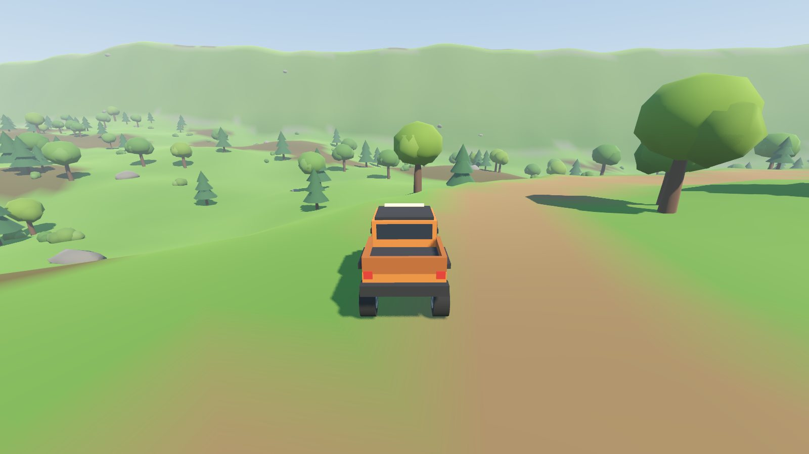
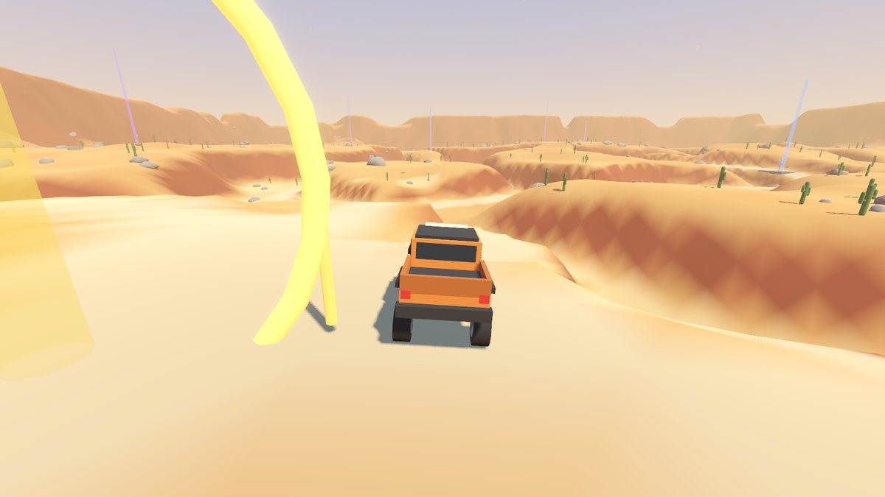
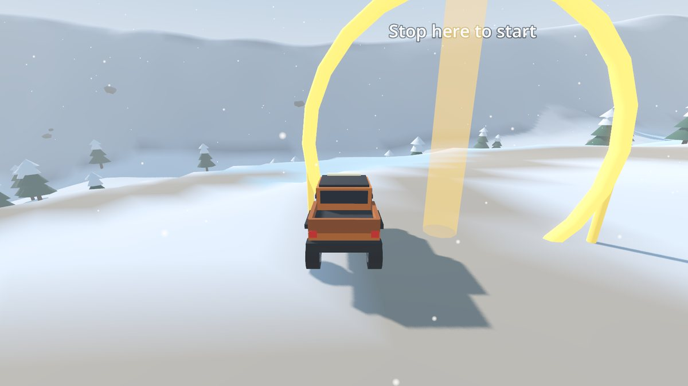
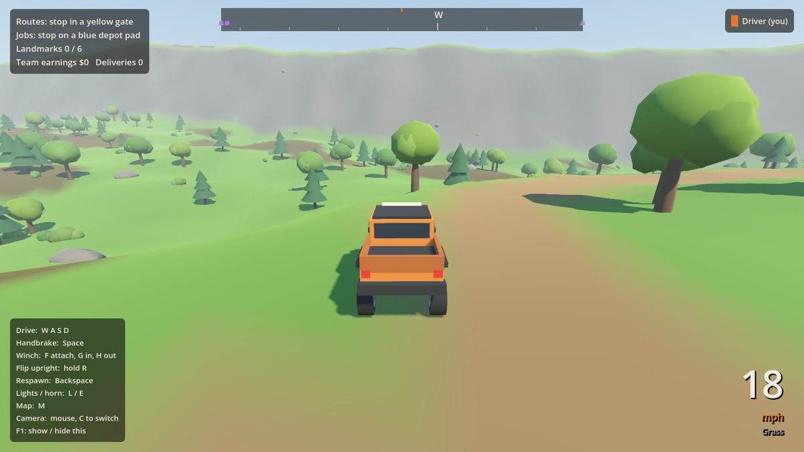
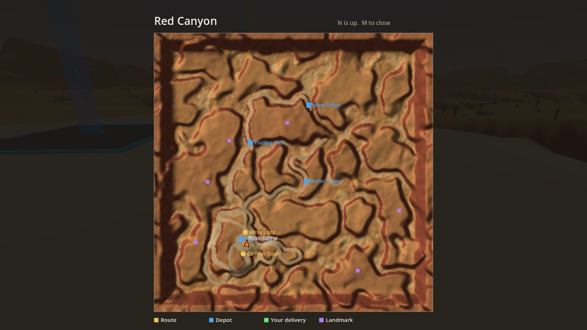
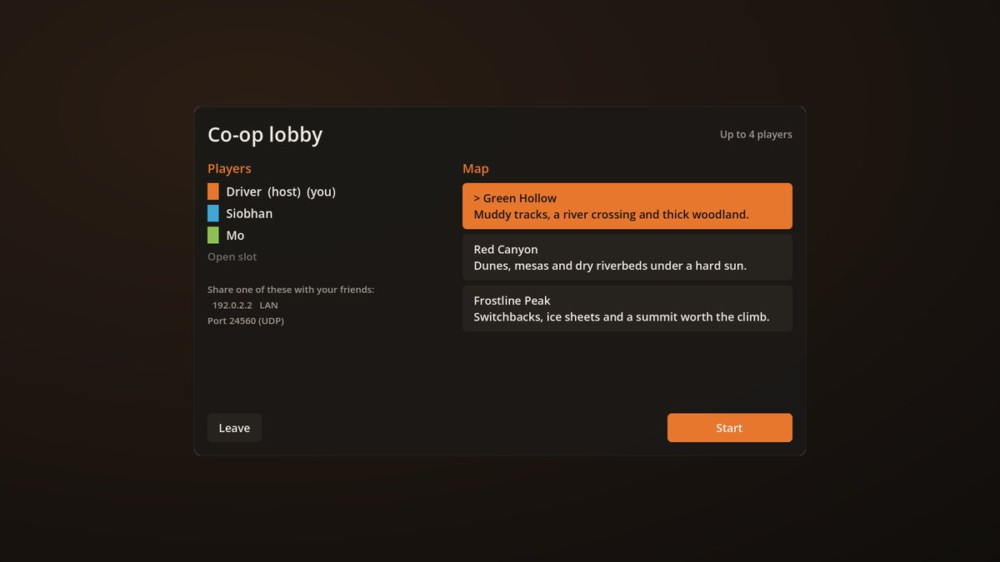

Green Hollow
Rolling woodland cut by a river. Find the shallow ford or wade in and hope.
Mud on the tracks and along the banks.
Off-road driving for Windows. Head out alone, or bring up to three friends over your home network or Tailscale.
Free. Windows 10 and 11, 64-bit. Keyboard or controller.
Every map has trails out of Base Camp, rough ground off them, and its own kind of trouble underfoot.

Rolling woodland cut by a river. Find the shallow ford or wade in and hope.
Mud on the tracks and along the banks.

Dunes on top, dry riverbeds below, and mesa edges you will want to keep away from.
Soft sand in the canyon floors.

A mountain with switchbacks up the side and a view from the top.
Ice sheets on the low ground and on some trails.
Drive anywhere you like. When you want a goal, the markers are colour coded the same way in the world, on the compass and on the map.
Stop in a yellow gate to start a timed run through the checkpoints. In co-op the whole convoy has to reach the finish before the clock stops.
Stop on a blue depot pad to load cargo, then take it to the depot marked green. Knocks and rollovers damage the load and cut the pay.
Six cairns hidden on high ground on every map. Finding one pays the whole team.
Hook a tree, a rock, a building or a friend's truck and reel in. It is how you get out of the ditch, and how you drag your mates out of theirs.


Up to four players, each in their own truck. One of you hosts and the others connect straight to them. There are no accounts and no servers.
Choose Host co-op, keep port 24560, and press Start hosting.
The lobby lists it. Use the LAN one, like 192.168.1.20, at home, or the Tailscale one, 100.x.y.z, from anywhere.
They choose Join co-op and type that address. They can join before you start or drop into a running game.
Not on the same network? Put everyone on the same Tailscale tailnet and join with the host's 100.x.y.z address. Nothing to forward on the router. The installer already allows Driver through Windows Firewall; everyone needs the same version.

Everything can be rebound in Settings, for keyboard and controller separately.
| Action | Keyboard | Controller |
|---|---|---|
| Accelerate, brake and reverse | W and S, or the arrow keys | RT and LT |
| Steer | A and D | Left stick |
| Handbrake | Space | A |
| Winch on or off | F | Y |
| Reel in, let out | G and H | RB and LB |
| Flip upright | Hold R | Hold X |
| Respawn on the trail | Backspace | View |
| Headlights, horn | L and E | D-pad up, left stick click |
| Look around, switch camera | Mouse, C | Right stick, right stick click |
| Map, pause | M, Esc | D-pad down, Menu |
Run Driver-Setup.exe. Windows may warn that the installer is from an unknown publisher; choose More info, then Run anyway. You get a Start menu entry, a desktop shortcut and the firewall rule for hosting.
Would rather not install? Each release also has Driver-portable.exe, which runs from anywhere.
The trucks, trees and rocks are built from simple low-poly shapes. Drop free Quaternius models, or any .glb, into the asset folders and the game scales and places them for you.
The full guide is in the assets readme, and the source is on GitHub.